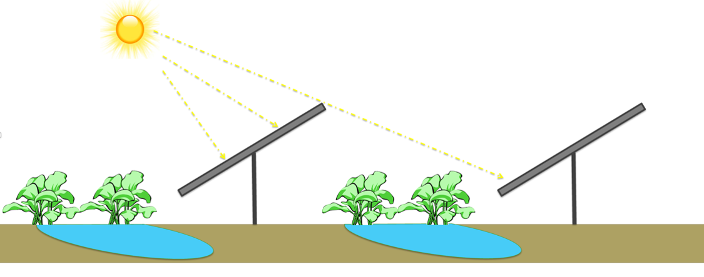

The Plant-Panel Symbiosis

This research pillar focuses on the micro-level interactions between plants, soil, and the altered environment created by solar panels. We investigate fundamental questions about how partial shade and changed microclimates affect plant physiology, water use efficiency, and overall crop health and productivity. How do plants adapt their photosynthetic processes? How much water can be saved? Which crops benefit the most from these conditions?
Years of field experiments have revealed a remarkable symbiosis. In hot, arid climates, the shade provided by panels creates a milder microclimate, buffering crops from extreme heat and light. This protection helps plants avoid the typical "midday depression" of photosynthesis, where they shut down to conserve water, allowing them to remain productive throughout the day.[1] The results are striking: in Arizona trials, chiltepin peppers produced three times more fruit and tomatoes doubled their yield under panels, all while using significantly less water.[2]
Photosynthesis Throughout the Day
Explore how agrivoltaics mitigates the "midday depression" of photosynthesis. In full sun, many plants shut down during the hottest part of the day. Under panels, they continue to thrive.